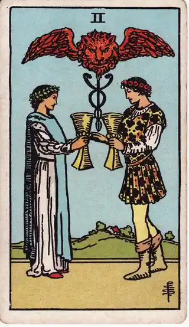

READING
Why the more you ask for advice, the less you can decide, and how to get your own voice back
· DECIDE. editors

You asked a senior colleague about changing jobs, and they pushed your back — "you should absolutely take on the challenge." You told a friend, and they stopped you — "staying where you are is safer right now." Your family even brought up a third path. Every time you ask, the opinions increase, and yet the decision does not come one step closer. Before you know it, can you no longer hear the voice anywhere that says "what did I really want to do?"
Let me say this first: the goal of this article is not "don't ask anyone for advice." The goal is not to mistake the role of asking. Asking helps you gather material, but it is not a place to hand your final decision over to someone else. Here, we will sort out how to get your own voice back from among too many other voices.
POINT 01 Why the more you ask, the less you can decide
There are two reasons. The first is that advice is, at its base, a reflection of "that person's values." Someone who values stability most will recommend the path that avoids risk. Someone who likes challenge and stimulation will recommend the path that leaps in. Both are well-meaning, and both were the right choice in that person's life. But the conditions and values of your life are different from theirs. The more opinions grow, the more you end up looking at a shuffle of other people's values, and your own sense of acceptance recedes.
The second is a quieter motive. Behind our repeated asking, there is sometimes a hidden feeling: "I cannot bear the weight of responsibility for a decision alone." You want to be able to excuse yourself — "that person agreed with me, too." You want someone to stamp their approval — "it's all right, that choice is correct." That feeling itself is natural, but no matter how sincere the other person is, they cannot carry the responsibility for the life you choose in your place. That is why, no matter how many people you ask, the last anxiety never disappears.
There is one more point that is easy to overlook. The more people you ask, the more easily a perfectionism of "I don't want to leave a single opposing opinion" starts to work. A decision that everyone agrees on hardly exists in reality. While you wait for unanimity, you miss the timing itself. You need to draw a line: the goal of asking is not "everyone's acceptance," but "having enough material for your own acceptance."
POINT 02 What the cards help you see

Two of Cups shows two figures offering cups to each other. It is a card of dialogue, trust, and the exchange of feelings, but what matters here is that it is an "exchange," not a "handover." Receiving another person's words and entrusting your own decision to them are different things. Asking for advice is a place to exchange cups. But whether to drink is decided, to the very end, by you.

The Hermit shows a sage standing alone, holding a lantern. It symbolizes returning a head full of other people's voices, once, to a quiet place. When you cannot decide because there are too many opinions, what you need is not "asking someone else again," but time when neither notifications nor advice can reach you, to face your own true feelings. The lantern's light is small, but all it lights is the ground at your own feet.

The High Priestess shows a figure sitting quietly, gazing at the knowledge within. It stands for a perspective that values the intuition from before words — the sense that "somehow, this doesn't feel like the one." Other people's opinions can be lined up with logic, but your own discomfort and relief cannot be heard unless you grow quiet. Not taking your first intuition lightly is the starting point of your own center.
POINT 03 Asking is for "gathering material." For the decision, face your own record
The right way to use asking for advice is only "when you gather material for your judgment." An unfamiliar system, the stories of people with experience, the backing of numbers. For gathering facts like those, other people's strength is effective. But leave the work of pulling the trigger on "which one to choose" to a quiet time alone.
What works at that point is how you use a decision log. You record, separately, "who said what to me" and "how I myself first felt." For example, a senior colleague's words — "you should take on the challenge" — and, before that, the feeling you held — "I'm actually a little scared, but I want to try." If you keep both side by side, then when you are about to be pulled along by the strength of an opinion, you can return to your own first feeling.
Keeping a record works next time, too. If you have a habit of being swayed by people's opinions at every big decision, look back at your log and you will see your own track record — "last time I also asked three people, and in the end I decided by my first intuition, and it was right." Confidence grows not from other people's stamps of approval, but from the history of your own decisions. I also wrote about sorting out the state of being unable to decide itself in Why you can't decide when you're indecisive, and how to find your way out. If what you're torn about involves your distance from people, see the page on decisions you're torn over in relationships as well.
POINT 04 Questions to ask yourself
Finally, set all of other people's words aside, and try asking yourself these questions. Before you asked anyone, which way were you leaning? Are the opinions gathered now facts, or are they someone's values? Under the condition "if that person had not objected," which would you choose? And, taking it that you will carry the responsibility for deciding alone by yourself, which is the one you would still want to choose?
A decision made to meet other people's expectations, even if it goes well, somehow stays someone else's life. Conversely, a choice made by quietly listening to your own voice leaves, whatever the result, the feeling that you walked on your own feet. The one who pulls the trigger is always you. Tonight, try taking time to listen to no one's voice but your own.
Related decision guides
Cards related to this article
More reading
- The types of free tarot readings and how they differ — where the "that feels spot-on" feeling comes from, and how to use them for a decision
- When you're torn over whether to keep going or quit. Standards for letting go of attachment
- Why I, who don't believe in fortune-telling, made tarot into a decision-making tool
- When you're torn over whether to keep your current job. How to read a plateau in your career
- What changes in deciding when you stop searching for the right answer